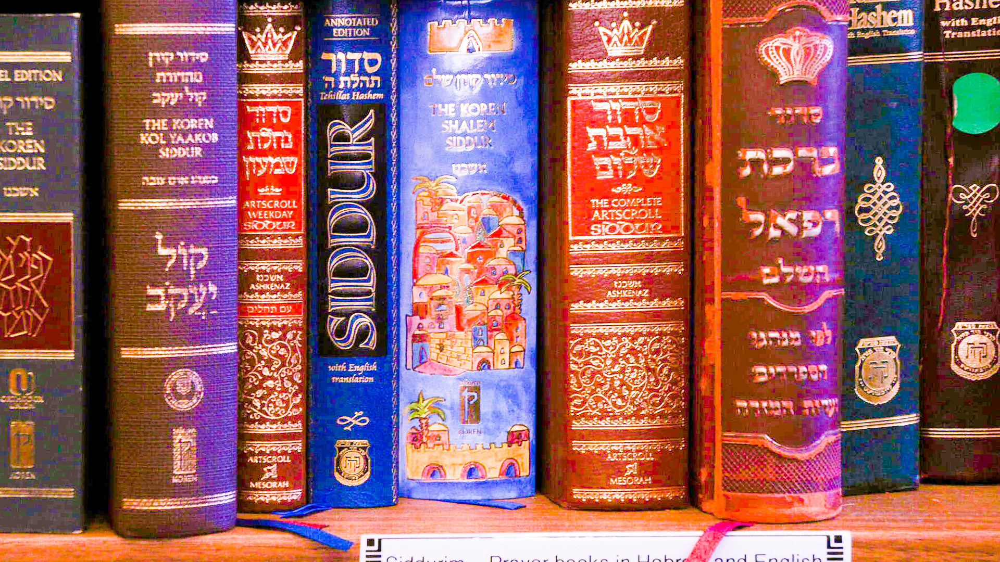

This is a pciture of jewish prayer books found in the Hillel. I used the camera raw filter to focus on the coloring from the book in the middle and to create an image that really popped. I wanted to highlight the color and brightness and even that out across the image.
